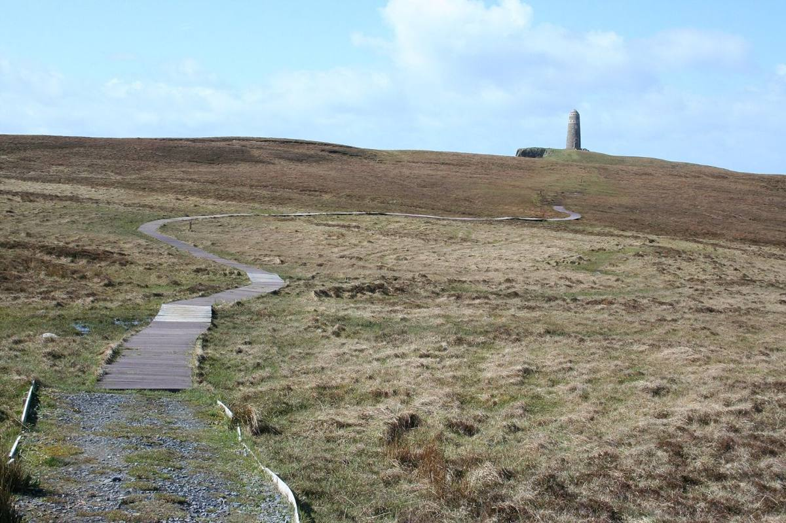
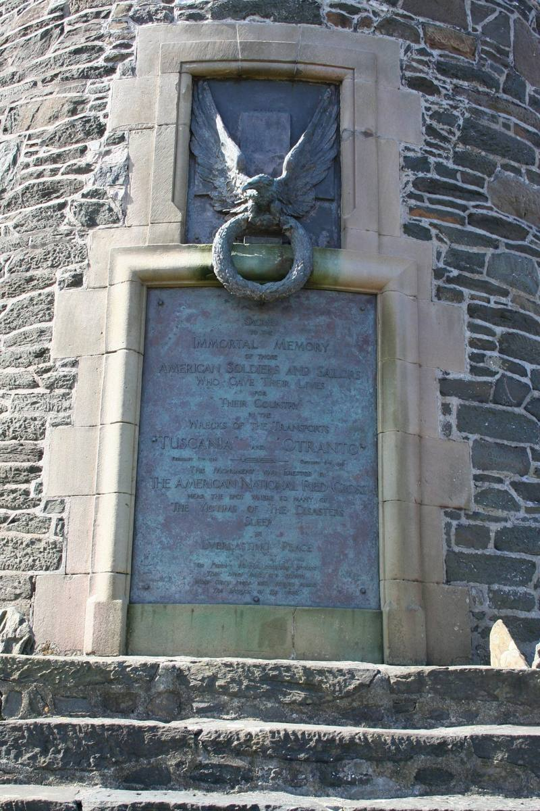
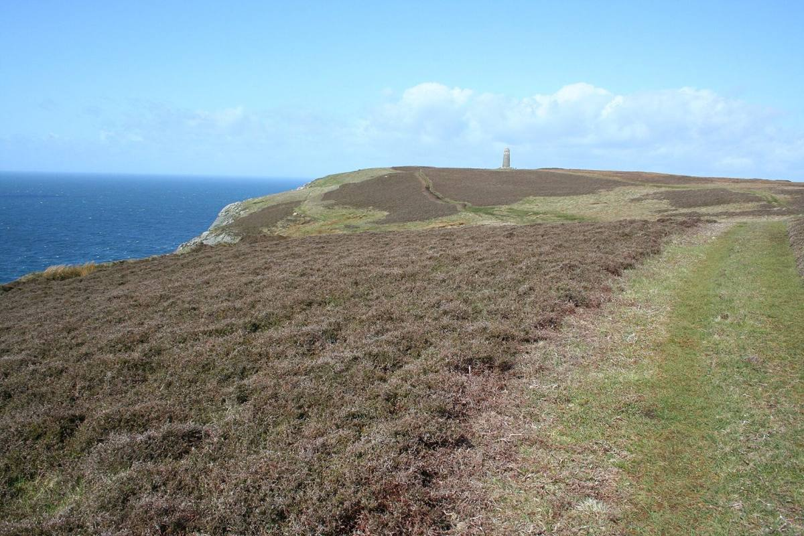

A stone tower on the edge of 90-metre cliffs at the south-west tip of Islay, put up by the American Red Cross in 1920 for the men lost from two troopships off this coast in 1918.
In February 1918 a U-boat torpedoed the SS Tuscania seven miles off the Oa, with about 2,000 American soldiers on board; around 200 of them and 60 British crew died. In October the HMS Otranto collided with another ship in a storm and was wrecked in Machir Bay, and 431 men were lost. Islanders buried many of them.
The walk crosses the RSPB's Oa nature reserve. Fulmars, kittiwakes and razorbills nest on the cliffs, and golden eagles hunt over the moor. On a clear day you can see Northern Ireland.
Route on Walkhighlands →What it looks like



Photographs from Wikimedia Commons: MSeses, CC BY-SA 4.0; MSeses, CC BY-SA 4.0; MSeses, CC BY-SA 4.0; MSeses, CC BY-SA 4.0. Prices are 2026 figures in pounds, with rand at £1 = R22.19. Check before booking.